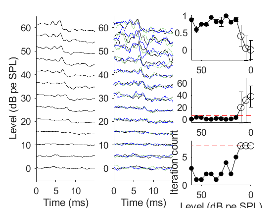

clear;
addpath('.\function');
data_name='P3.mat';
spl_data_path=['./human_data/' data_name];
load(spl_data_path);
sampling_point=1:300;
volt_en=10;
c=[0 0 0;
141 209 123;
0 0 255];
capture_time = time(sampling_point);
num_nosignal=0;
figure(1);
subplot(1,3,1)
for k = 1:length(ABR)
data=ABR(k).p;
plot(time(sampling_point),smooth(time(sampling_point),mean(data(end-2:end,sampling_point)),0.05,'loess')*volt_en+ABR(k).intensity,'k');
hold on;
end
xlabel('Time (ms)')
ylabel('Level (dB pe SPL)')
set(gca,'box','off','tickdir','out','fontname','arial','fontsize',14)
ylim([-5,65])
subplot(1,3,2)
is_signal=ones(1,length(ABR));
tic;
for k = 1:length(ABR)
buff(1:3,:)=zeros(3,size(ABR(k).p,2));
data=ABR(k).p;
spl(k)=ABR(k).intensity;
for j = 1:size(data,1)/3
indx=(j-1)*3+1:(j-1)*3+3;
buff=data(indx,:);
test_signal=buff(1:3,sampling_point);
for i =1:3
test_signal(i,:)=smooth(time(sampling_point),test_signal(i,:),0.05,'loess')';
end
[lagIdx,res(k,j),lag,ccm]=cross_test_3signal_human(test_signal);
buffers(k,j).buffers=buff(1:3,sampling_point);
lags(k).spl=spl(k);
lags(k).lag(j,:)=lag;
lags(k).ccm(j,:)=ccm;
if res(k,j)>=3
final_num(k)=j;
thres_num(k)=j;
for i = 1:3
plot(time(sampling_point),test_signal(i,:)*volt_en+spl(k),'Color',c(i,:)/255);
hold on
end
break;
end
if j==size(data,1)/3 && res(k,j)<3
is_signal(k)=0;
final_num(k)=j;
thres_num(k)=j+1;
for i = 1:3
plot(time(sampling_point),test_signal(i,:)*volt_en+spl(k),'Color',c(i,:)/255);
hold on
end
end
end
end
toc;
set(gca,'box','off','tickdir','out','fontname','arial','fontsize',14)
xlabel('Time (ms)')
ylim([-5,65])
disp(spl)
disp(thres_num)
disp(is_signal)
disp(sprintf('max test num is %.4d and max_iteration is %.1d',ABR(1).sweeps(end),size(data,1)/3))
subplot(3,3,3)
for k=1:length(spl)
ccMat(k,:)=lags(k).ccm(final_num(k),:);
end
cc_mean=normalize(mean(ccMat,2),'range');
cc_std=std(ccMat,[],2);
scatter(spl(find(is_signal)),cc_mean(find(is_signal)),'k.','SizeData',600);
hold on;
scatter(spl(find(not(is_signal))),cc_mean(find(not(is_signal))),'ko','SizeData',100);
errorbar(spl,cc_mean,cc_std,'k')
set(gca,'xDir','reverse','box','off','tickdir','out','fontname','arial','fontsize',14)
subplot(3,3,6)
lagMat=[];
for k=1:length(spl)
lagMat(k,:)=lags(k).lag(final_num(k),:);
end
lag_mean=mean(lagMat,2);
lag_std=std(lagMat,[],2);
scatter(spl(find(is_signal)),lag_mean(find(is_signal)),'k.','SizeData',600);
hold on;
scatter(spl(find(not(is_signal))),lag_mean(find(not(is_signal))),'ko','SizeData',100);
errorbar(spl,lag_mean,lag_std,'k')
plot(0:60,(0:60)*0+6,'r--');
set(gca,'xDir','reverse','box','off','tickdir','out','fontname','arial','fontsize',14)
subplot(3,3,9)
[f1,gof]=sigFit(spl,(final_num-1)/(max(final_num)-1));
spls=0:0.1:60;
yfit=f1(spls)*(max(final_num)-1)+1;
scatter(spl(find(is_signal)),final_num(find(is_signal)),'k.','SizeData',600);
hold on;
scatter(spl(find(not(is_signal))),final_num(find(not(is_signal))),'ko','SizeData',100);
plot(spl,final_num,'k-')
plot(10:60,(10:60)*0+7,'r--');
ylim([0,8])
xlabel('Level (dB pe SPL)')
ylabel('Iteration count')
set(gca,'xDir','reverse','box','off','tickdir','out','fontname','arial','fontsize',14)
[f1,gof]=sigFit(spl,(final_num-1)/(max(final_num)-1));
spls=0:0.1:60;
yfit=f1(spls);
thres=round(spls(find(yfit<=0.9,1,'first')));
disp(sprintf('Satified threshold on 0.9 sigFit is %0.2d dB',thres));
disp(gof)
Elapsed time is 0.181822 seconds.
60 55 50 45 40 35 30 25 20 15 10 5 0
3 1 1 2 2 1 2 4 2 5 8 8 8
1 1 1 1 1 1 1 1 1 1 0 0 0
max test num is 3500 and max_iteration is 7
Satified threshold on 0.9 sigFit is 13 dB
sse: 0.4440
rsquare: 0.7617
dfe: 12
adjrsquare: 0.7617
rmse: 0.1924
